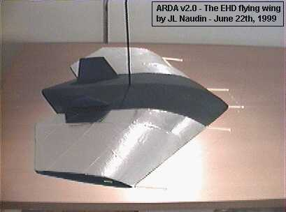

|
EHD/EAD Electrogravitics Researches and Experiments |
|
|
EHD/EAD Electrogravitics Researches and Experiments |
|
created on April 11th, 1999 - JLN Labs - Last update September 15, 2006
The ElectroHydroDynamics ( E.H.D.) may open new ways in advanced propulsion. An EHD device uses a direct conversion of electrical energy into kinetic energy. A specially shaped electrostatic field creates an hydrostatic pressure (or motion) in dielectric media. If the media is a fluid like air (or aether), a flow is produced and this produces a motion of the device. A powered flow of medium (like air or aether) within a shaped electrostatic field adds energy to the system which is picked up (as potential difference) by electrodes and thus produces energy.
Other interesting ref : The Possibility of Strong Coupling Between Electricity and Gravitation by Takaaki Musha- Infinite Energy Magazine Issue 53 ( Jan-Feb 2004 ) page 61-64 |
| AIAA-2002-1131 “OUTSIDE THE BOX” SPACE AND TERRESTRIAL TRANSPORTATION AND ENERGY TECHNOLOGIES FOR THE 21ST CENTURY by Theodore C. Loder. Published by the American Institute of Aeronautics and Astronautics and presented at the 40th AIAA Aerospace Sciences Meeting and Exhibit, Reno NV. Paper number AIAA-2002-1131. Abstract : << This paper reviews the development of antigravity research in the US and notes how research activity seemed to disappear by the mid 1950s. It then addresses recently reported scientific findings and witness testimonies - that show us that this research and technology is alive and well and very advanced. The revelations of findings in this area will alter dramatically our 20th century view of physics and technology and must be considered in planning for both energy and transportation needs in the 21st century.>> This paper can be downloaded at : http://users.erols.com/iri/Loder.PDF |
The GFS UAV, a Coanda effect flying saucer
Lifter : Towards a Future Propulsion...
The JLN's experimental models photos Album
The UAV ( Unmaned Aircraft Vehicle ) project
The Enhanced T.T. Brown Electrokinetic experiment
The Northrop Shock Wave Reduction experiment
The TT.Brown EKP device in MINERAL OIL
ARDA project : Towards new projects....
The ARDA Mk 9 "XB-35", Tests flights in progress on April, 2002
The ARDA Mk 9, Test flight successful on March 24, 2002
The ARDA Mk 8, Tests flights successful on August 25, 2001
ARDA mkV : First test flight successful on July 17, 2001
The ARDA Mk V ( rendering and photos of the constructions )
ARDA mk7 "NorthStar": First flight successful on August 20, 2000
Tests successful by Gilles Charles at the Bourges University ( France )
The Biefeld-Brown Effect :
Thinkings on Electrogravitics, by JL Naudin
The Frolov's ELG-Hat v1.0, very easy to build by yourself
- How to build a high sensitive balance for electrogravitics experiments
- How to build a 30 kV DC power supply
- The T.T.Brown Electrokinetic Apparatus experiment
- The Enhanced version of Electrokinetic Apparatus
- The T.T. Brown / Agnew H. Bahnson Labs pictures
- An Electro-dynamic device : the ELG02
- Hydrostatics - Aerodynamics pressure - by Paul E Potter
- Electrokinetic UFO - by Paul E Potter
- "A simplified Explanation of the application of the Biefeld-Brown Effect to the solution of the problems of space navigation" by Mason Rose
- THE BROWN-BAHNSON ELECTRIC (adamski type) UFO - by Paul E Potter
The ELG Reactor experiment by Gilles Charles

 UXAV 01: the first test flight on
June 13th, 1999
UXAV 01: the first test flight on
June 13th, 1999Power On Board Test SUCCESSFUL... (updated 11-27-99)
GREAT EVENT - Dec 4th, 1999 - The POB test in a closed run (updated 12-14-99)
Proof of concept : Ion wind effect testing
A Successful replication of EHD devices from Neil McPherson ( updated 05-03-00 )
 The R8-radial EHD-engine from
Neil McPherson ( updated 05-27-00 )
The R8-radial EHD-engine from
Neil McPherson ( updated 05-27-00 )
 The R9- EHD device from
Neil McPherson ( updated 07-03-00 )
The R9- EHD device from
Neil McPherson ( updated 07-03-00 )
The UXAV (Unmanned eXperimental Aerial Vehicle for EHD flight research facility) :
 UXAV
02: The tests flights (
1st test flight on June 26th, 1999)
UXAV
02: The tests flights (
1st test flight on June 26th, 1999)
UXAV 03 : on board camera photos ( a summer activity... )


The PFT v2.0, a spaceship mock-up, towards the deep space.....
The PFT Motor mk1, towards Free Energy ?...
The PFT Motor mk2, an enhanced high speed version...
A sucessfull replication of the PFT motor by Neil McPherson
 The New Twist Experiment from
Neil McPherson ( updated
08-21-01 )
The New Twist Experiment from
Neil McPherson ( updated
08-21-01 )
Variations on the PFT Motors, towards a new Searl engine by Dave Squires
 The New SEG design, an enhanced Searl
Effect Generator by
Dave Squires
The New SEG design, an enhanced Searl
Effect Generator by
Dave Squires
Unless otherwise noted, all materials at this site (including without limitation all text, html markup, graphics, and graphic elements) are copyrighted ©, 1997-2006 by Jean-Louis Naudin. The material available through this site may be freely used for attributed noncommercial educational purposes only. We ask that due credit and notification be given the author.
All materials appearing on this website may not be reproduced, stored in any retrieval system, or used in any way for commercial purposes without the express prior written permission of the copyright holder.
Disclaimer: The author assumes no liability for any incidental, consequential or other liability from the use of this information. All risks and damages, incidental or otherwise, arising from the use or misuse of the information contained herein are entirely the responsibility of the user. Although careful precaution has been taken in the preparation of this material, we assume no responsibility for omissions or errors.
Send correspondence to: JNaudin509@aol.com
Return to the Advanced Propulsion
home page